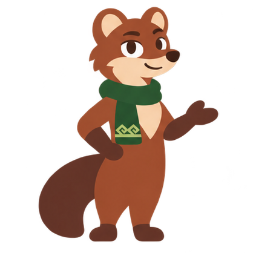
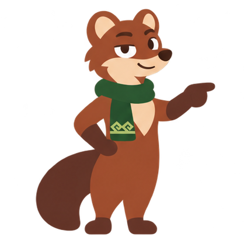
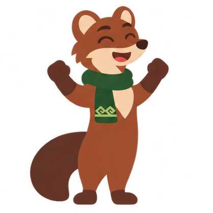

Главный экран ученика
Duolingo для башкирского: четыре компоновки экрана, который ученик видит после входа на сайт или в Telegram Mini App. Во всех вариантах главное — учёба. Проверка переводов живёт внутри упражнений: подпись «В переводе ошибка?» после ответа. Данные одинаковые: башкирский → русский, раздел «Знакомство», фразы из разговорника Bashkorttele.
Дорожка уроков
Самый узнаваемый Duolingo и понятный ответ на «что дальше». Почти не показывает, сколько разделов впереди и что задал учитель.

Каталог тем
Видна вся программа разом и удобно возвращаться к пройденным темам. Меньше ощущения игры и движения вперёд, чем у дорожки.

«Как у вас дела?»
Урок сразу на главной
Ноль кликов до учёбы: открыл и уже отвечаешь, а «В переводе ошибка?» видно в момент ответа. Карта прогресса и разделы уходят в отдельную вкладку.

Һеҙҙең хәлдәрегеҙ нисек? — Как у вас дела?
В переводе ошибка?/daily. Риск: нет «дома» с мотивацией и обзором, поэтому возвращаться может быть менее приятно. Выбирать, если важнее всего минимум действий из критериев ТЗ.Лига класса
Учёба через соревнование: задание учителя и недельная лига класса. Самостоятельному ученику без класса показать почти нечего.
8 карточек · до пятницы · выполнили 14 из 26

Как выбрать
- Нужен привычный и надёжный Duolingo → A.
- Важнее видна программа курса и темы → B.
- Важнее минимум действий и показать упражнение жюри за секунды → C.
- Пилот идёт через школы и учителей → D как отдельная вкладка.
- Сильная связка для демо: главная A (дорожка), сам урок как в C, вкладка «Класс» из D.
Фразы и ID настоящие (bashkorttele/trilingual-parallel-phrasebooks-bgpu, ba-ru-kk, 1 397 строк). XP, серия, класс, лига, названия разделов на башкирском и раздел «Праздники» придуманы; в манифесте помечены ❌. Манифест: zurbash-home.manifest.md